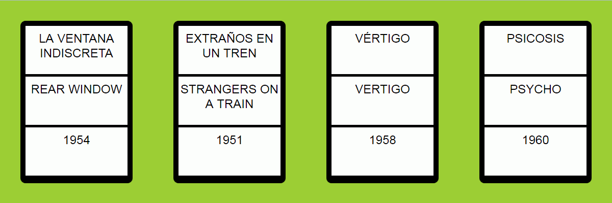

Resuelva los siguientes ejercicios guardando las respuestas en una carpeta cuyo nombre contenga su nombre y apellidos.
Corrija los errores del siguiente documento para que esté bien formado.
<?xlm version="1.0" encoding="UTF-8"?>
<invento codigo=I001>fonógrafo
<inventor id>Thomas Alva Edison
</invento>
</inventos>
Escriba una hoja de estilo CSS para que el siguiente documento se vea en el navegador como muestra la imagen.
<?xml version="1.0" encoding="UTF-8"?>
<hitchcock>
<estudios>
<estudio id="warner">
<nombre>Warner Bros.</nombre>
<fecha dato="nacimiento">1923</fecha>
</estudio>
<estudio id="paramount">
<nombre>Paramount Pictures</nombre>
<fecha dato="nacimiento">1914</fecha>
</estudio>
</estudios>
<actores>
<actor nombre="James Stewart" nacimiento="1908" muerte="1997" />
<actor nombre="Grace Kelly" nacimiento="1929" muerte="1982" />
<actor nombre="Farley Granger" nacimiento="1925" muerte="2011" />
<actor nombre="Ruth Roman" nacimiento="1922" muerte="1999" />
<actor nombre="Kim Novack" nacimiento="1933" muerte="" />
<actor nombre="Anthony Perkins" nacimiento="1932" muerte="1992" />
<actor nombre="Vera Miles" nacimiento="1929" muerte="" />
</actores>
<peliculas>
<pelicula>
<titulo lang="es">La ventana indiscreta</titulo>
<titulo lang="en">Rear Window</titulo>
<fecha dato="estreno">1954</fecha>
<estudios nombre="paramount" />
<oscar nominaciones="4" premios="0" />
<actores>
<actor>James Stewart</actor>
<actriz>Grace Kelly</actriz>
</actores>
</pelicula>
<pelicula>
<titulo lang="es">Extraños en un tren</titulo>
<titulo lang="en">Strangers on a Train</titulo>
<fecha dato="estreno">1951</fecha>
<estudios nombre="warner" />
<oscar nominaciones="1" premios="0" />
<actores>
<actor>Farley Granger</actor>
<actriz>Ruth Roman</actriz>
</actores>
</pelicula>
<pelicula>
<titulo lang="es">Vértigo</titulo>
<titulo lang="en">Vertigo</titulo>
<fecha dato="estreno">1958</fecha>
<estudios nombre="paramount" />
<oscar nominaciones="2" premios="0" />
<actores>
<actor>James Stewart</actor>
<actriz>Kim Novack</actriz>
</actores>
</pelicula>
<pelicula>
<titulo lang="es">Psicosis</titulo>
<titulo lang="en">Psycho</titulo>
<fecha dato="estreno">1960</fecha>
<estudios nombre="paramount" />
<oscar nominaciones="4" premios="0" />
<actores>
<actor>Anthony Perkins</actor>
<actriz>Vera Miles</actriz>
</actores>
</pelicula>
</peliculas>
</hitchcock>

A partir del mismo documento XML del ejercicio 2, escriba las expresiones XPath que devuelvan exactamente las respuestas indicadas en los cuadros. Escriba todas las expresiones XPath en un único fichero de texto, numerando las respuestas.
<actor>James Stewart</actor>
<actriz>Grace Kelly</actriz>
<actor>Farley Granger</actor>
<actriz>Ruth Roman</actriz>
<actor>James Stewart</actor>
<actriz>Kim Novack</actriz>
<actor>Anthony Perkins</actor>
<actriz>Vera Miles</actriz>
Rear Window
Strangers on a Train
Vertigo
Psycho
nominaciones="4"
nominaciones="2"
La ventana indiscreta
Vértigo
Psicosis
Paramount Pictures
nacimiento="1922"
A partir del mismo documento XML del ejercicio 2, escriba y enlace las hojas de estilo XSLT que devuelvan las respuestas indicadas en los cuadros. Los espacios y saltos de línea no son importantes.
<?xml version="1.0" encoding="UTF-8"?>
<html>
<h1>Películas de Hitchock</h1>
<p><strong>La ventana indiscreta</strong>, con James Stewart y Grace Kelly, se estrenó en 1954.</p>
<p><strong>Extraños en un tren</strong>, con Farley Granger y Ruth Roman, se estrenó en 1951.</p>
<p><strong>Vértigo</strong>, con James Stewart y Kim Novack, se estrenó en 1958.</p>
<p><strong>Psicosis</strong>, con Anthony Perkins y Vera Miles, se estrenó en 1960.</p>
</html>
<?xml version="1.0" encoding="UTF-8"?>
<hitchcock>
<actores>
<actor><nombre>James Stewart</nombre></actor>
<actor><nombre>Grace Kelly</nombre></actor>
<actor><nombre>Farley Granger</nombre></actor>
<actor><nombre>Ruth Roman</nombre></actor>
<actor><nombre>Kim Novack</nombre></actor>
<actor><nombre>Anthony Perkins</nombre></actor>
<actor><nombre>Vera Miles</nombre></actor>
</actores>
<peliculas>
<pelicula titulo="La ventana indiscreta"/>
<pelicula titulo="Extraños en un tren"/>
<pelicula titulo="Vértigo"/>
<pelicula titulo="Psicosis"/>
</peliculas>
</hitchcock>